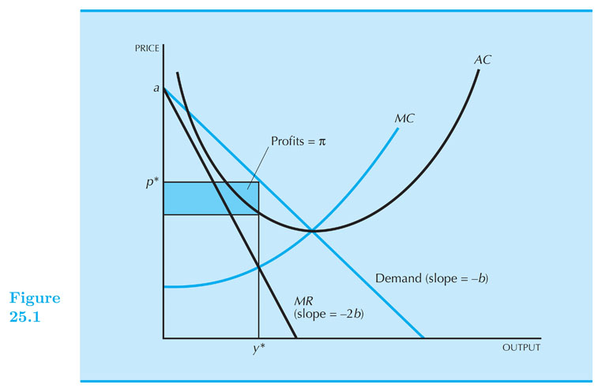
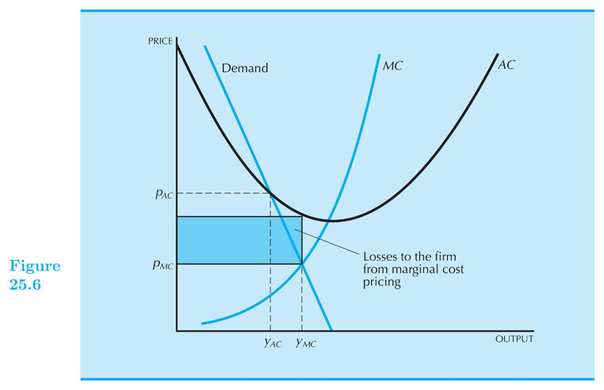
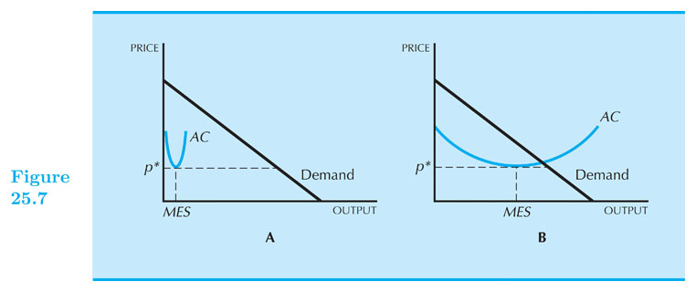

Monopoly
Intermediate Microeconomics (Econ 100A)
Kristian López Vargas
UCSC - Spring 2017
Monopoly
-
A monopoly is the exclusive possession of an industry's supply.
-
In a competitive market, producers determine best quantity for a given price (firms are price-takers).
-
In monopoly, the firm can either determine the price and consumers decide how many units to buy (demand curve), or, equivalently, the firm determines the output and consumers determine the price (inverse demand $ p(q) $ ). We adopt the latter approach.
-
Monopolist cannot determine arbitrary q and p at the same time - the monopolist keeps in mind the demand of the consumer as a restriction, and chooses $ q $ in order to maximize profit ($ \pi = p(q) \times q $).
Reminder
-
Total Revenue: $ TR(q) = p \times q $
-
Total revenue of a competitive firm is linear in q, because the price is given for the firm.
-
Total revenue of the monopolist not linear because the price changes with quantity ( $ p(q) $ ).
-
Make sure you understand this well before you continue.
Monopolist Maximizing Profits
The monopolist's profit-maximization problem:
Maximize profits: $ ~ \text{max}_q: \pi(q) = TR(q) - c(q) $.
That is, we want to choose $ q $ that gives highest profit:
At the peak of the profit "hill" it must be flat, right? This is what mathematically we called the first-order condition:
$ \frac{d\pi}{dq} = \frac{dTR}{dq} - \frac{dc}{dq} = 0 $
In other words, monopolist wants to produce $ q $ such that:
$ MR(q) = MC(q) $
We often denote this quantity as $ q^M $.
Solving the problem graphically
- see document camera
Monopolist - Marginal Revenue
Let's look at $ MR(q) $ more closely (reminder: although we do not always write it like that, remember $ p $ always represents the inverse demand, $ p(q) $, in the monopoly case).
Since $ ~ TR(q) = p(q) \times q $, then:
$ \begin{align} MR(q) &= \frac{d TR(q)}{ d q} \\ &= p + q \frac{dp}{ d q} \\ &= p + q \frac{dp}{ d q} \frac{p}{p} \\ &= p ( 1 + \frac{dp}{ d q} \frac{q}{p}) \\ &= p \left( 1 + \frac{1}{ \epsilon(q)} \right) \\ &= p \left( 1 - \frac{1}{ | \epsilon(q) | } \right) \end{align} $
Back to Maximizing Profits
Remember to maximize profits we want: $ ~ MR(q) = MC(q) $
But we just learned that: $ ~ MR(q) = p \left( 1 - \frac{1}{ | \epsilon(q) | } \right) $
Therefore: $ ~ p \left( 1 - \frac{1}{ | \epsilon(q) | } \right) = MC(q) $
Since $ \left( 1 - 1/ | \epsilon(q) | \right) < 1 $, the monopolist will set $ p > MC $. That is, the consumer pays more for an extra unit of production than what it costs society to produce that unit. Inefficiency!
In contrast, in a competitive markets we had: $ price = MC $.
Also, notice that monopolist produces at a $ q^M $ such that: $ |\epsilon| > 1 $

Monopoly in a Linear Demand Curve - Example
A monopolist, faces a linear inverse demand curve $ ~ p = a - b q ~ $, and has this cost function $ ~c(q) = c q ~$, for $ ~ a, b, c > 0 ~ $:
The profit maximization problem is: $ ~ \text{max}_q ~~ \pi = TR(q) - c(q) = (a-bq) q - cq $
(1) Find marginal revenue and marginal cost functions: $ ~~ MR(q) = a - 2bq ~~$ and $ ~~ MC(q) = c $
(2) Equate the two and solve for q: $ a-2bq = c ~~ $. It follows that: $ ~ q^M = \frac{(a-c)}{2b} $
(3) Plug $ q^M $ into inverse demand and find the price of the monopolist: $ ~ p^M = \frac{(a+c)}{2} $
Numerical Example! (home)
SC Municipal Utility is the sole provider of water to Santa Cruz residents and faces the following demand for water (in gallons): $ q^d = 100 - p $. Also, $ TC = 2q $.
Step 0: Inverse Demand: $ p = 100 - q^d $
Step 1: Find MR and MC
$ TR = Pq = (100 - q)~q = 100q -q^2 $
$ MR = \frac{dTR}{dq} = 100 - 2q ~ $ and $ ~ MC = \frac{dTC}{dq} = 2 $
Step 2: Set MR = MC and find $ q^M $
$ 2 = 100 - 2q ~ $, then: $ ~q^M = 49 $
Step 3: Find $ p^M $ by plugging in $ q^M $ into the inverse demand:
$ p^M = 100 - q^M = 51 $
Inefficiencies Of Monopoly
While a competitive industry operates where price = marginal cost, monopolized industry operates where price > marginal cost; which results in lower output.
Consumers are typically worse off under a monopoly: Suppose you are willing to pay 7 dollars for a burrito, while $ MC = 5 $ and $ P_M = 10 $. Sorry, you don’t get to buy it…
In a monopoly, there are consumers that are willing to pay more than what it would cost to make those extra units (MC), but they are priced out. This would not happen in a competitive market.
Inefficiencies Of Monopoly - Prices and Quantity
Let us consider $ (Q_M,P_M) $ as the optimal production set of a monopolist and $ (Q_C,P_C) $ the optimal production for a competitive firm.

Inefficiencies Of Monopoly - Deadweight Loss
B + C represent the DWL; If pricing is competitive consumers would gain area A + B.

Inefficiencies Of Monopoly - Deadweight Loss
Interactive version:
Patents and Patent Thickets (readings)
A patent is a license from the government that offers exclusive rights to produce an invention.
The life of a patent in the United States is 17 years.
A patent thicket refers to the dense and overlapping series of patents an incumbent company might own to fend off competition.
Companies can file a "preliminary injunction" against a company they feel infringes on their patents.
Top tier companies arm themselves with dense patent thickets.
Owning a dense thicket allows protection from injunctions due to the fear of a counter injunction.
Natural Monopoly
-
A natural monopoly occurs generally when there are
-
high fixed costs
-
low marginal costs.
-
-
Examples of natural monopolies include the gas network, electricity grid, and railway infrastructure.
Natural Monopoly
If a natural monopoly is forced to operate at a competitive market's price, $ MC = price $, it would incur in loses from producing under the $ AC $ curve.

What Causes Monopolies?
Remember that a monopolist IS the whole of the supply side of a product.
A monopolist must then have the means of producing the large volume of product.
The minimum efficient scale (MES) represents the level of output that minimizes average cost.
A monopolist must then have a large minimum efficient scale $ \underline{relative} $ to the demand.
What Causes Monopolies? (readings)

Graph A represents a demand much larger relative to the MES.
Graph B has a comparable MES relative to demand .
Cartels (readings)
A cartel occurs when a few firms decide to collude and artificially hike prices to monopoly levels and drive out competition.
The biggest cartel in the world is OPEC, owning 80% of the worlds reserves in oil.
Price fixing is illegal in the United States; the US courts do not have jurisdiction to try foreign anti-trust cases.
OPEC has used their influence to cause a massive shortage of gasoline. In 1973, due to retaliation from US involvement in the Yom Kippur War, OPEC imposed an oil embargo.
Tax Effects on a Monopolist Graphically (readings)
Let us examine what would happen to price if we imposed a quantity tax on the market.
If we were to gear the tax towards the monopolist, the price of output would increase marginal cost by the tax ($ MC + t $)
In the case of a linear demand curve, where the marginal revenue is twice as steep demand curve, the price goes up by half the amount of the tax

Monopoly behavior beyond unique, uniform pricing
-
Perfect price discrimination: charging each customer a different price. Efficient level of output BUT CS = 0.
-
Charge different prices in two different markets: Firm will charge the lower price in the market where demand is more elastic.
-
If monopolist can set a two-part tariff: it will want to set price equal to MC and make all of its profits from the entry fee.